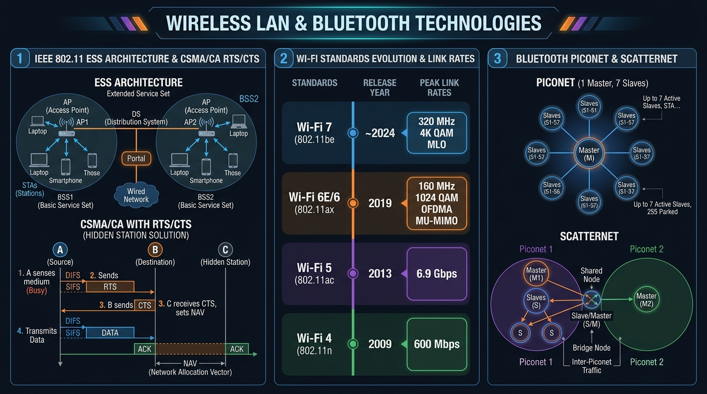

Master IEEE 802.11 WLAN architecture (BSS, ESS), CSMA/CA RTS/CTS collision avoidance, Wi-Fi 4/5/6/7 standards evolution, and Bluetooth Piconet/Scatternet topology.
The IEEE 802.11 standard defines two primary operational modes for Wireless LANs:
| Component | Abbreviation | Description & Function |
|---|---|---|
| Basic Service Set | BSS | The fundamental building block of 802.11; consists of stationary/mobile wireless stations and an Access Point (AP). Identified by a BSSID (AP MAC address). |
| Extended Service Set | ESS | Consists of two or more BSSs connected via a wired **Distribution System (DS)**. Allows seamless roaming across APs under a single SSID. |
| Distribution System | DS | The underlying wired Ethernet network connecting multiple APs together. |
To solve the Hidden Station problem, 802.11 uses CSMA/CA (Collision Avoidance) with an optional **RTS/CTS Reservation Handshake**:
| Standard | Generational Name | Frequency Bands | Max Link Rate | Key Technologies |
|---|---|---|---|---|
| 802.11b | Legacy | 2.4 GHz | 11 Mbps | DSSS, CCK |
| 802.11a/g | Legacy | 5 GHz / 2.4 GHz | 54 Mbps | OFDM Modulation |
| 802.11n | Wi-Fi 4 | 2.4 GHz / 5 GHz | 600 Mbps | MIMO (4x4), 40 MHz Channels, 64-QAM |
| 802.11ac | Wi-Fi 5 | 5 GHz | 3.5 Gbps | MU-MIMO, 160 MHz Channels, 256-QAM, Beamforming |
| 802.11ax | Wi-Fi 6 / 6E | 2.4 / 5 / 6 GHz | 9.6 Gbps | OFDMA, 1024-QAM, Target Wake Time (TWT), 6GHz Band |
| 802.11be | Wi-Fi 7 | 2.4 / 5 / 6 GHz | 46 Gbps | 320 MHz Channels, 4096-QAM (4K-QAM), Multi-Link Operation (MLO) |

Bluetooth (IEEE 802.15.1) is a Short-Range Wireless Personal Area Network (WPAN) operating in the **2.4 GHz ISM band** using **Frequency Hopping Spread Spectrum (FHSS)** (hops 1600 times per second across 79 channels).
| Feature | Classic Bluetooth (v2.1 / v3.0) | Bluetooth Low Energy (BLE v4.0 / v5.x) |
|---|---|---|
| Primary Focus | Continuous high-throughput data streaming (Audio, file transfer) | Ultra-low power consumption for IoT, wearables & sensors |
| Power Consumption | Moderate (Requires frequent recharging) | Extremely Low (Operates for years on coin-cell battery) |
| Channels | 79 channels (1 MHz bandwidth) | 40 channels (2 MHz bandwidth; 3 advertising + 37 data) |
| Connection Time | ~100 ms | < 3 ms |